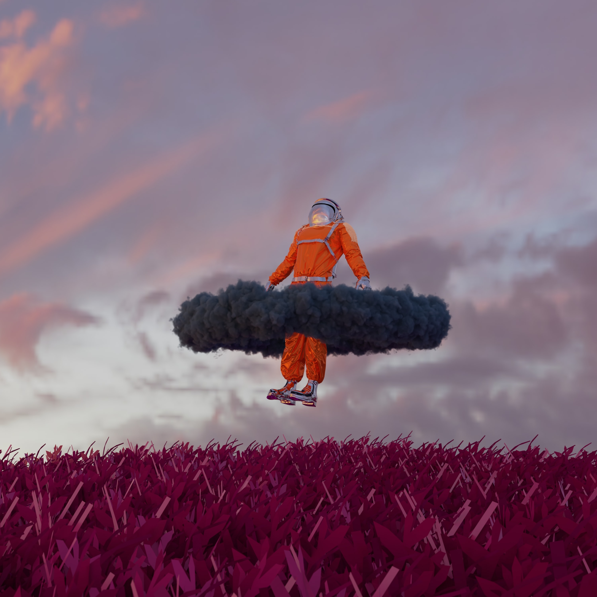

Stranger Things
Descubra uma coleção de artes digitais estranhas que desafiarão como você percebe a vida, o universo e tudo mais. 🤯

Inspirado por mentes criativas como Hideo Kojima, o artista apresenta uma coleção de artes de outro mundo que nos faz refletir sobre nosso lugar no cosmos, para onde estamos indo e se a nuvem brilhante de Night Vale é amiga ou inimiga. ☠Confira mais da incrÃvel arte deles aqui.
O que é "arte fina"? O que é "arte da cadeira"? 🪑 Quem se sentou nessa cadeira e o que a nuvem fez com eles? O artista atravessa dimensões para o espaço etéreo da consciência inconsciente.Explore aqui mais da arte instigante.

Imagine uma vaca como uma esfera. 🮠A vaca esférica é a vaca definitiva. Então por que vacas, e toda a matéria, não são esferas? O artista nos dá uma lição sobre entropia e a segunda lei da termodinâmica com suas geometrias impressionantes. Aprecie aqui mais da arte digital.